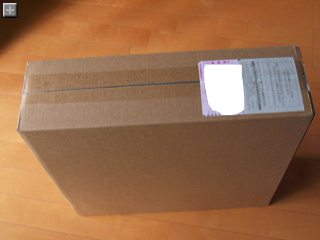
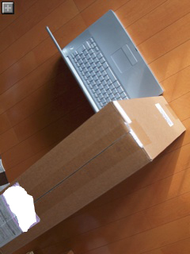
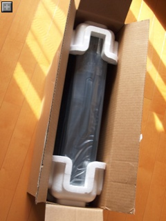
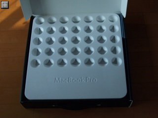
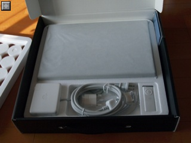
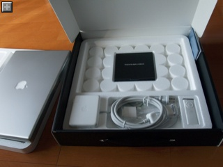
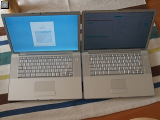
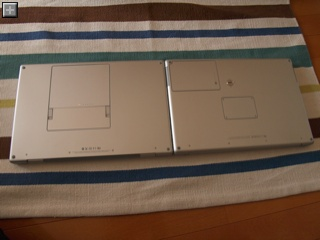
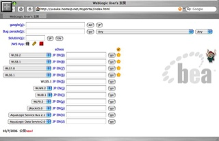
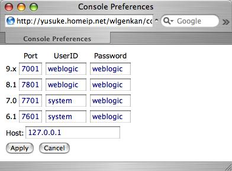

エクスプローラのデフォルト表示を設定する方法
Windows の Explorer ではいつも表示を"詳細"にするんですが、次に開いたとき、そのまま"詳細"になっていたり、"並べて表示"になっていたり、いまいち挙動がつかめません。
しっかりとデフォルト値を設定する方法をしらべたらありました。
・人力検索はてな
エクスプローラ内で移動しているうちに、
フォルダが変わると「アイコン」や「並べて表示」に変わってしまいます。
詳細に統一することは出来ないでしょうか？
OSはWindows2000Professionalを使用しています。
どなかたご存知の方がいらっしゃったら教えてください。
何卒よろしくお願い致します。
関連リンク:
・@IT - Winows TiPS ファイル名の表示順序を変更する
http://www.atmarkit.co.jp/fwin2k/win2ktips/342xpsort/xpsort.html
Macみたいに連番が振られているファイルを辞書順ではなく人間的にソートする設定。
・WindowsXPでなぜか、フォルダ表示がおかしくなっちゃった…
http://clubjs.tsukaeru.jp/pc/win2kxp/folder.htm
デフォルトではフォルダ200コまでしか記憶されないらしい。
・Microfost サポートオンライン - フォルダの表示設定やカスタム設定が失われる、または設定が正しくない
http://support.microsoft.com/default.aspx?kbid=813711
200コの制限を増やす方法。これをやるとレジストリが膨らむらしいので、デフォルト値を設定する方法が知りたいんだけれども・・。
Core 2 Duo MacBook Pro ベンチマークテスト
Cinebenchでベンチマークテストをしてみました。
うちのMacBook Pro は 2.16GHz、メモリ1GB です。
****************************************************
Tester :
Processor : MacBook Pro
MHz : 2.16
Number of CPUs : 2
Operating System : Mac OS X 10.4.8
Graphics Card : Radeon1600
Resolution :
Color Depth :
****************************************************
Rendering (Single CPU): 358 CB-CPU
Rendering (Multiple CPU): 669 CB-CPU
Multiprocessor Speedup: 1.87
Shading (CINEMA 4D) : 434 CB-GFX
Shading (OpenGL Software Lighting) : 1645 CB-GFX
Shading (OpenGL Hardware Lighting) : 3383 CB-GFX
OpenGL Speedup: 7.79
****************************************************
先代 PowerBook G4 1.5GHz の結果は以下の通り。
今でも十分早いんですけどね。
****************************************************
Tester :
Processor : PowerBook G4
MHz : 1.5
Number of CPUs : 1
Operating System : Mac OS X 10.4.8
Graphics Card : ATI Mobility Radeon 9700
Resolution :
Color Depth :
****************************************************
Rendering (Single CPU): 149 CB-CPU
Rendering (Multiple CPU): --- CB-CPU
Shading (CINEMA 4D) : 160 CB-GFX
Shading (OpenGL Software Lighting) : 479 CB-GFX
Shading (OpenGL Hardware Lighting) : 1025 CB-GFX
OpenGL Speedup: 6.43
****************************************************
先代PowerBook と比べると Rendering が149 -> 668 CB-CPU 、Shading (OpenGL Hardware Lighting) が1025 -> 3383。それぞれ448.32%、330.04% と大幅に向上しているのがわかります。
シェーディングパフォーマンスが PowerBook で ハードウェアアクセラレーション を効かせた場合よりも MacBook でソフトウェア処理した場合の方が高速なのは凄いです。
Core Duo の MacBook Pro 2.0GHz のテスト結果はこちら(ASCII24 > Mac24)にあります。
Core Duo の MacBook Pro 2.0GHz と比べても Rendering が559 -> 668 CB-CPU 、Shading (OpenGL Hardware Lighting) が1262 -> 3383。それぞれ19.49%、268.06% の向上になります。
ASCII24 > Mac24 の結果と合わせたグラフも作ってみました。
グラフィックチップのパフォーマンスが相対的に異様に高いのが分かります。
Core 2 Duo MacBook Pro セットアップメモ
メモリの増設方法は？
・写真で分かる! MacBook Proのメモリー増設手順
MacBook Pro 1.83GHz/2.0GHz(2006年1月発表、15インチモデル)の説明ですがネジの位置などから判断するに同じ手順で大丈夫そう。
MacBook Pro が対応しているメモリは 200pin PC2-5300(DDR2-667) DDR2 SO-DIMM という規格のものみたい。
メジャーなお店はこんなとこでしょうか。
・PLUS YU楽天堂 200pin PC2-5300(DDR2-667)対応 DDR2 SO-DIMM 1GB 増設メモリ
・PLUS YU楽天堂 Windows XP OEM版/増設メモリ セット
・SanMac Webダイレクトショップ・PC Success ノーブランド(バルク) DDR2 SDRAM DDR2-667 1GB
↑間違い。240pinのデスクトップ用がリンクされてました。正しくはこちら↓
・PC Success ノーブランド(バルク) ノート用 DDR2 SDRAM SODIMM DDR677 1GB (PC2-5300)
・価格.com DDR2 PC2 5300 1GB バルク検索結果
Core 2 Duo の MacBook Pro は 3GB までの増設に対応していますが、コストパフォーマンスが大変よろしくないので、庶民には現在の所 1GB 足して 2GB にするのが現実的でしょう。
Intel化に伴いダウンロードしたソフトはこちら。
・Optimized Firefox 2.0 for G4, G5, and Intel Macs
Intel Mac に最適化された FireFox 2.0
・Fugu
SFTPクライアント。手元にあったのはバージョンは最新の1.2.0だけどPowerPC版でした。
追記(10/29 0:46):
Universal Binary 版はどうしても起動中にクラッシュしてしまいます。現在問い合わせ中。パフォーマンスを問うアプリケーションではないのでとりあえず PowerPC 版を使ってればいいかな？
追記(10/29 13:00):
設定ファイルを読み込む途中で落ちているっぽいので、設定ファイルを捨てて試してくれとのこと。
しかし状況は改善されませんでした。引き続き問い合わせ中。
・Parallels Desktop for Mac
話題の仮想化ソフト。これがあるから MacBook Pro を買ったと言っても過言ではありません。
年内に VMWare のベータ版が出るという話もあるので、ライセンス購入は見合わせて、試用版ライセンスのまま様子をみます。
・Logitech Control Center
手元にインストールされていたのは PowerPC 版でした。今Logitech のマウスは使っていないのでアンインストールのためだけにダウンロード。
PowerPC 版はアンインストーラが認識してくれないので Intel 版をインストールして、アンインストールしたら消えました。
・Microsoft Messenger for Mac 6.0.1
カメラが付いたので、ビデオチャットをするためには Adium じゃなくて純正クライアントが必要・・・・と思ったけど、カメラにはまだ対応してないみたいです？？？？
Intel Mac に対応してないソフト
・Mighty Mouse
Unsanity Mac OS X Hardware and Software compatibility status.
マウスカーソルを左きき用にするためMighty Mouseが必要なのですが、Intel Mac には対応していないみたいです。
現在サポートに問い合わせ中。
どっかリソースをいじればカーソル変更できるでしょうか・・？
追記：リリースされました！
At Long Last, Intel Cursor Customization
・カーソル（マウスポインター）のリソース
実際のリソースの所在。手でいじるのはやや面倒そう。
追記 11/9/06:
・Unsanity.org > iTunes 7 and Unified Windows
ShapeShifter 2.4b4 は Intel に対応していて、マウスカーソルの変更(だけ)もできました。
Mighty Mouse のカーソルも読み込めます。
とりあえず試用しながらしのいでます。
・Remote Desktop Connetion
Universal Binary化されてない模様。
・VNC Thing
Universal Binary化されていないどころか、オリジナルの配布ページが消えてしまってる。
Core 2 Duo Powerブ・・じゃなくて MacBook Pro 到着！
移行アシスタントでデータを転送するまえにパシャパシャ撮ってみました。

珍しく福山通運じゃなく宅急便でやってきました

まだまだ現役だよ！と主張する PowerBook。電池新品になったばかりだもんね！

発泡スチロールで浮いた状態で入ってます
年々梱包がエコロジー化してます。右はPowerBookの箱。

あけたとこ。なんか面白い発泡スチロール

発泡スチロールの下には本体、ACアダプタ、リモコンが。

本体の下にはリカバリDVD
MacBook Pro のエンブレム。最近のAppleのデザイントレンドに乗ってツルっとしてます

MacBook(左)とPowerBook(右)。いやに明るさが違うけどPowerBookは輝度最大ではないです
最大に開いたところ。PowerBookのほうがずいぶん開けますね・・・

裏面。左がMacBook Pro。
あれ？メモリはどっから増設するんだろ・・・
{kind=link}
{kind=link}
{kind=link}
{kind=link}
{kind=link}
{kind=link}
{kind=link}
{kind=link}
{kind=link}
Spring Web Flow 1.0 リリース
また新たな Web フレームワークが出来上がってしまったようです。
・Spring Web Flow 1.0 Released
・Spring Web Flow Home
Struts を初めて触った時は「まぁ、だいたいこういうとこに落ち着くよね。あとは視覚的にページフローを定義できる IDE さえ揃えば十分」と思ったんですが。
頭固すぎでしょうか？
もちろんさわりもせずに必要ないと決めるのは危険ですが。
一発 WebLogic アップデート
AquaLogic Service Bus 2.5 の検索フォームを追加しただけです。
・一発 WebLogic
・これは便利！？ 一発 WebLogic
引き続きナイスなネーミング募集中です。
BEA Japan Forum 2006 事前申込開始
「始まる、ビジネス指向のSOA」だそうで。
英語に訳すと "Business Oriented Service Oriented Architecture" になってしまうんでしょうか。
・BEA Japan Forum 2006
・事前申込ページ
Core 2 Duo MacBook Pro 出荷！！！
注文前の出荷予定: 5〜7日
注文確認後の出荷予定: 11/6(12日後)
実際の出荷: 2日後
となんだかバラバラですが早く出荷されるに越したことはありません。
刺激的な週末になりそうです。
マクロレンズ ED 50mm F2.0 Macro 購入
標準レンズだとどうしても寄って撮れないし、背景のボケ具合にも限界があるので、花とかを撮るのはなかなか難しいです。
一ヶ月以上前になりますがえいやっ、とマクロレンズを買いました。
マクロレンズで接写すると普通目で見えていないものが写るので面白いです。
花なんかはたぶん誰がどう撮ってもきれいに、それなりに味のある写りになります。
誰でもウマっぽく撮れるということは、そこからさらに個性を出すのが難しいということかもしれませんが。
とりあえずパシャパシャ、と撮ったものを３つほど。
室内でフラッシュを焚きつつ、露出をかなりオーバーに撮って輪郭を飛ばしてみました。
買ったレンズはこれ。Olympus の ズイコーデジタルブランドのマクロは２つありますが、これは 35mm 換算で100mm、等倍相当の中望遠マクロです。
・オリンパス ズイコーデジタル ED 50mm F2.0 Macro
F2.0 ということで被写界深度が大変浅いです。上の三つの写真は開放絞りですが普段はやや絞り込んで撮った方が良さそう。
{kind=link}
{kind=link}
{kind=link}
MacBook Pro 注文！
Virtual PC は便利なもので、Windows でしか動かないソフトを仕方なく使うときや、ブラウザの互換性の検証等、趣味程度であれば十分使い物になります。
最近仕事で仕方なく Linux や Windows を頻繁に使っているのですが、朝から夕方まで常用するには Virtual PC ではさすがに力不足です。
というわけで Intel Mac です。待っていました、Core 2 Duo 搭載の Powerブ・・・じゃない、MacBook Proです。
Virtual PC は動きませんが、Parallels Desktopは快適に動くことでしょう！
Core 2 Duo 搭載バージョンがリリースされたら買うつもりではいたのですが、衝動買いはいけない、と、一応10時間くらい悩んでからアップルストアで注文しました。
「出荷予定日 : 2006/11/06 お届け予定日 : 2006/11/08までに」だそうです。
デザインがほとんど変わっていないのは残念ですが、待ちに待った 64BitのPowerブ・・・じゃない、MacBook Pro です。楽しみ楽しみ。
関連リンク:
・アップル、Core 2 Duo搭載の「MacBook Pro」- 最大39%の高速化
・二代目はどこが違う? 新型MacBook Proについて訊く
Logitec の外付け HDD(250GB) 購入
自宅サーバのバックアップにと、USB 接続できる 250GB のハードディスクを楽天市場で購入しました。
・Logitec アウトレット祭 -【250GB】好きなソフトが1本ダウンロードできるハードディスク 8,381(税込み8,800)円
ちょっと古いモデルなのかもしれないけど送料、税込価格は9,325円となかなかお買い得です。
7200RPM/流体軸受けで十分高速、十分静か。
面白いのはソースネクストのソフトを一本(Windows版のみ)ダウンロードできるシリアルコードが付いていることです。
いくら相当になるのかわかりませんが、ちょうど欲しいソフトがあれば実質8000円弱くらいになる計算でしょうか。
お買い得なのはこのコードの有効期限が12月20日までなので、在庫処分しているからかもしれません。
注文した日はギリギリのタイミングだったのか、すぐに売り切れになっていました。
Logitec の外付け HDD(250GB) 購入
Firewire 接続の外付けハードディスクはいくつかあるのですが、自宅サーバに使っている iBook(タンジェリン) は USB ポートしかありません。
自宅サーバのバックアップをちゃんとしないといけないということで、USB 接続できる外付けドライブを探していたのですが、楽天市場でお値打ち品が見つかりました。
・Logitec アウトレット祭 -【250GB】好きなソフトが1本ダウンロードできるハードディスク 8,381(税込み8,800)円
送料、税込価格は9,325円となかなかお買い得です。
ちょっと使ってみたけれども7200RPM/流体軸受けで十分高速、十分静かです。
面白いのはソースネクストのソフトを一本(Windows版のみ)ダウンロードできるシリアルコードが付いていることです。
いくら相当になるのかわかりませんが、ちょうど欲しいソフトがあれば実質8000円弱くらいになる計算でしょうか。
お買い得なのはこのコードの有効期限が12月20日までなので、在庫処分しているからかもしれません。
注文した日はギリギリのタイミングだったのか、すぐに売り切れになっていました。
いくつか英語関連サイトメモ
TOEIC に申し込んで、珍しく机に向かって勉強し始めてます。最低限三日坊主目標！？
・ITMedia インターネット時代のお手軽英語勉強術——リーディング編
Web 上の英語を読むとき、辞書を調べるかわりに Google のツールバーを利用しようとかいうコツが。Safari では無理かな。
・ITMedia インターネット時代のお手軽英語勉強術——ヒアリング編
お勧めのポッドキャストとか掲載されてる。
・はてな skypeで英語を話す人を探すサイトはありませんか? 相手が日本語を勉強したがっていて、こっちは英語を教えてもらうみたいな。英語のサイトでも構いません。
Language Exchange のパートナーを探せるサイトが紹介されてる。
・MyLanguageExchange.com
はてなの回答で紹介されていたサイト。
日本語を教えてあげて、英語を教えて貰えば安上がり！？
日本語を学びたくて、英語がしゃべれる人、かつ JST に近い時間帯に起きてる人たちはどこらへんの国にいるんだろうか？マレーシア、シンガポールあたり？
・ITエンジニアのための英語
先日のエントリでも書いたけど仕事で英語を使うのに便利そうなコツをまとめたサイト。
特にTOEIC に役立つという感じではないけれども。
いくつか英語関連サイトメモ
TOEIC に申し込んで、珍しく机に向かって勉強し始めてます。最低限三日坊主目標！？
・ITMedia - インターネット時代のお手軽英語勉強術——リーディング編
Web 上の英語を読むとき、辞書を調べるかわりに Google のツールバーを利用しようとかいうコツが。Safari では無理かな。
・ITMedia - インターネット時代のお手軽英語勉強術——ヒアリング編
お勧めのポッドキャストとか掲載されてる。
・はてな - skypeで英語を話す人を探すサイトはありませんか? 相手が日本語を勉強したがっていて、こっちは英語を教えてもらうみたいな。英語のサイトでも構いません。
Language Exchange のパートナーを探せるサイトが紹介されてる。
・MyLanguageExchange.com
はてなの回答で紹介されていたサイト。
日本語を教えてあげて、英語を教えて貰えば安上がり！？
日本語を学びたくて、英語がしゃべれる人、かつ JST に近い時間帯に起きてる人たちはどこらへんの国にいるんだろうか？マレーシア、シンガポールあたり？
・ITエンジニアのための英語
先日のエントリでも書いたけど仕事で英語を使うのに便利そうなコツをまとめたサイト。
特にTOEIC に役立つという感じではないけれども。
Yerba Buena Garden パノラマ写真
Yerba Buena Garden はサンフランシスコのMOMAやMoscone Center、Metreonといった名所に囲まれた公園です。
Yerba Buena Garden パノラマ写真
Yerba Buena Garden パノラマ写真(要QuickTime)
無機質な都会の風景に突然飛び込んでくる芝生の緑。結構癒される場所です。
{kind=link}
ATOK17以前 -> ATOK2006 アップデートでフリーズ、漢字入力状態強制解除される場合の対処方法
本日 ATOK2006 のアップデータがリリースされました。
・ATOK 2006 for Mac アップデータ
細かい修正のほか、ATOK17以前の環境を引き継いだときに不安定になる現象を修正するとあります。
問題は発生していないのですが ATOK17からのアップデートという意味では状況が当てはまるので、予防の意味も含めて適用しました。
が・・逆になんだか不安定になりました。
特定の文字列を入力すると必ずアプリケーションが固まってしまったり、漢字入力モードが強制解除されてしまって半角英数文字しか入力できなくなってしまったりします。
カスタマサポートに問い合わせると、問題は認識しており、回避策として
ATOK環境設定の[確定履歴>入力・変換>確定履歴のクリア]を押すことで現象が収まることが確認できているとのことです。
さらに一度これを実施したら以降問題は発生しないとのこと。
この方法はまだジャストシステムのサポートサイトにも掲載されておらず、現在掲載を検討中とのことです。
ATOK 環境設定パネル
一応フォローしておくと、初めて問い合わせたJustSystemのカスタマサポートは大変丁寧かつ、素早く的確な対応をしていただけて大変気持ちよかったです。
J3100の一太郎くらいからお世話になっています。
今後ともよろしくお願いいたします。
いたばし花火大会写真コンテスト入選っ！
８月に行われた板橋区の花火大会、パシャパシャと写真を撮りまくって写真コンテストに応募してみました。
このテのコンテストに応募するのはもちろん初めてなのですが、なんといきなり入選してしまいました！
・いたばし花火大会2006 写真コンテスト受賞作品
応募制限点数一杯の３点応募したのですが、自分で一番お気に入りの写真が選ばれたのでとってもうれしいです！
しかしこの写真コンテスト、9月下旬に入賞作品発表のはずが「写真コンテストはただいま最終審査中です。まもなく受賞作品の発表となります。どうぞ楽しみにお待ち下さい！」と表示されたまま今日までずれこみました。
なんの弁解もなく3週間近く遅れるのはなかなか立派なお役所仕事です。 ＞ 板橋区観光協会の方々しかも今見ると受賞作品発表ページへのリンクが消えています。何か手違いで発表が遅れた？早まった？？
ただのテストページで実は受賞してない、なんてことがないことを祈ります。
補足(2006/10/26 0:37):
たった今トップページの「お待ちください」が消え、リンクが復活しました。
7時間くらいかけて1ページずつ、じっくり更新していたようです。
担当者様、お疲れさまです。
でもここまで遅れたのは自業自得（？）ですから、税金使ってタクシーとか乗らないでくださいね！
9月下旬発表とのことで、9月21日から発表を首を長くして毎日チェックしており辛口です。
ごめんなさい。
来年は是非とも
・予定通り発表
・遅れるなら遅れるで状況の説明を
・html の更新はいっぺんに(^^;
できるようがんばってください！
ジレット フュージョン 5+1 ゲット
私はカミソリ負けしやすいので、肌に優しいという「ジレット フュージョン 5+1 」、気になっていました。
[N]ネタフルでレビューとプレゼントの紹介があったので応募したら当たってしまいました！
・ジレットフュージョン 5+1
今まで気分次第で電気カミソリとジレットの最初の電動カミソリ "M3Power" を使い分けていました。
どちらでもカミソリ負けするので寄り優しくなったというジレット フュージョン 5+1 には期待大。
M3Power の替え刃がなくなったら買おうと思っていたので嬉しい当選です。
頂いたのは替え刃一つ付きのジレット フュージョンパワーホルダー、専用のシェービングジェルとなぜかPost-it
Gillette Fusion5+1 は、電動で振動する柄に加え、刃を五枚に増やして肌の負担を減らしたという製品です。
そんなに必要なのかというくらい、バッチリ5枚の刃が！
肝心の剃り心地ですが、確かに5枚の刃のおかげかスムースでヒリヒリしにくいです。
全くカミソリ負けしない、という事はないけれども明らかに流血事件の発生箇所は激減です。
フュージョン 5+1 の "+1" は何かというとピンポイントトリマーというオマケの刃のことです。
これで鼻の真下とかいままで剃りにくかったり、剃れてもシェービングフォームが鼻の穴に入って気持ち悪かったりした問題がだいぶ解消されます。
なかなか面白いアイディア。
"+1" に当たるもう一つの刃
振動は M3Power と同じく単4の乾電池(付属)駆動です。振動具合も M3Power と同じくらい。
惜しいのは同じジレット製にも関わらず M3Power の柄とマウントの互換性がないこと。
囲い込み戦略もあるでしょうから他社との互換性を実現するのは難しいかもしれませんが、せめて同じメーカーであればどのブランドの替え刃も利用できるようにしてほしいです。
エコロジーイメージも従来機種からの買い換えも促進できるのでは？
いずれにせよお気に入りのカミソリになり、早速替え刃を購入しました。
刃がM3Powerに比べて合計3枚も増えているのに値段がさほど変わらないのは企業努力の賜物でしょうか！？
・ジレットフュージョン 5+1
エンジニアと英語
最近仕事で一層英語力が必要になってきました。
メールやインスタントメッセンジャーでちょこまかやりとりしたり、トレーニングを受けたりするのはいいんですがテレカンファレンスなどはやや苦手です。
誰がしゃべってるんだ？誰に対してしゃべってるんだ？・・と考えているうちに話題を振られて、えっと・・えっと・・・何の話だったっけ？などと混乱してしまいます。
探せばきりがないですが、ちょっと参考になりそうなサイトを２つほど見つけました。
・ITエンジニアのための英語
http://tazya.blog61.fc2.com/
テレカンファレンスに特化したものではありませんがエンジニアが仕事で英語を使う上で有用な知識がテンポ良くまとめられています。
・IBM テレコン英会話小冊子
http://www-06.ibm.com/jp/ibm/cs/concepts/improve/telecon.html
テレカンファレンスで良く用いられるフレーズをまとめたものです。
内容的には「日本で何か問題が発生して米国のエンジニアに相談をする」、というシチュエーションを想定しているようですが、もちろん一般的に使えそうなイディオムも多くあります。
ついでに定量的な英語力を測ろうと５年ぶりくらいに TOEIC に申し込んでみました。
いつのまにかクレジットカードを使って Web から申し込めるようになっていました。便利便利！
・TOEIC
http://www.toeic.or.jp/
どこでも一発ログイン
を作ってみました。
一発ログインとはブックマークを選択するだけでログインフォームを表示することなくログインできるブックマークレットのことです。
パソコンを複数の人で共用している場合や、同じサイトに複数のアカウントを持っている場合、ログインボタンを押すのすら面倒な場合、回線が細くてログインフォームを表示する時間/パケット代がもったいない場合などに便利です。
JavaScript メモ - Bookmarklet 内で再帰処理
無名関数のままでは自身の呼び出しができないので、何でも良いので名前を付けてあげるのがコツ。
例) javascript:(countup=function(i){if(i!=0){countup(i-1);}alert(i);})(3);
実際に実行する
Gmail 一発ログイン
Gmail の利用時、毎回email、パスワードを入力するのは面倒ですね。
ブラウザにオートフィルさせることはできますが、ログインボタンをクリックするのすら面倒です。
なので私は一発でログインできるブックマークを作っています。
仕組みは簡単で、ログイン時に発生するパラメータを全部 GET クエリに積んでいるだけです。
だれでも簡単に同じ事ができるよう、一発ログインブックマークジェネレータを書いてみました。
下のテキストボックスにemail、パスワードを書くだけで必要なパラメータを含んだリンクが自動生成されます。あとは"Gmail 一発ログイン"のリンクをブックマークするだけ。
以降ブックマークをクリックするだけで一発ログインできるようになります。
ブラウザにユーザID/パスワードを記憶させている場合と同様、簡単にログインできてしまいます(1クリック減りますが)。
なのでパソコンから離れるときはスクリーンセーバなどでしっかりとパソコンをロックすることをお勧めします。
Mac 常用ソフトメモ
・Bare Bones Software - TextWrangler2
http://www.barebones.com/products/textwrangler/
定番エディタ BB Edit の無償版。
マルチバイトにもしっかり対応してて必要十分。
・Adium
http://www.adiumx.com/
マルチプロトコル対応メッセンジャーソフト。
Yahoo!、AIM、iChat、MSN のチャットをこれ一つでやってます。
・侍
http://yusuke.homeip.net/samurai/
タブ対応tailソフト。
Java を初めとする各種ログの解析に。
・iTerm
http://iterm.sourceforge.net/
タブ対応Terminalソフト。
・Yellow Mug Software - SnapNDrag
http://www.yellowmug.com/snapndrag/
スクリーンキャプチャソフト。
ウィンドウだけ、選択した領域だけ、時間指定で、といったキャプチャが出来て書き出すファイル形式も簡単に選択できる。
有償版もあるけど無償版で十分便利。
・Research Systems Unix Gruop - Fugu
http://rsug.itd.umich.edu/software/fugu/
SFTP フロントエンド。
・Unsanity - MIGHTY MOUSE
http://www.unsanity.com/haxies/mightymouse
マウスカーソルの形を変えるソフト。有償。
左ききなのでカーソルを右上向きにするためだけに入れてます。
・Unsanity - Windows Shade X
http://www.unsanity.com/haxies/wsx
ウィンドウのタイトルをダブルクリックで、Window をタイトルだけにするソフト。有償。
旧来の MacOS のユーザには必須（？）。
mixi(ミクシィ) 一発ログイン
mixi(ミクシィ) を始めるとなんとなく気になって頻繁に見にいってしまいます。
毎回email、パスワードを入力するのは面倒ですね。
"次回から自動的にログイン" という設定もありますが、たまにクッキーの期限が切れて再度ログインするのが面倒です。
なので私は一発でログインできるブックマークを作っています。
仕組みは簡単で、ログイン時に発生するパラメータを全部 GET クエリに積んでいるだけです。
だれでも簡単に同じ事ができるよう、一発ログインブックマークジェネレータを書いてみました。
下のテキストボックスにemail、パスワードを書くだけで必要なパラメータを含んだリンクが自動生成されます。あとは"Mixi 一発ログイン"のリンクをブックマークするだけ。
以降ブックマークをクリックするだけで一発ログインできるようになります。
ブラウザにユーザID/パスワードを記憶させている場合と同様、簡単にログインできてしまいます(1クリック減りますが)。
なのでパソコンから離れるときはスクリーンセーバなどでしっかりとパソコンをロックすることをお勧めします。
JavaScript が動作しない場合、メールアドレス・パスワードをここに入力することに抵抗がある場合は、以下のリンクをブックマークして YOUR_EMAIL, YOUR_PASSWORD の部分を書き換えてブックマークして頂いても結構です。
Mixi 一発ログイン
その他の一発シリーズ
・Google Analytics 一発ログイン
・Google Adsense 一発ログイン
・一発 / 一撃必殺 WebLogic
Google Analytics 一発ログイン
Google Analytics を始めるとアクセス数とか気になって頻繁に見にいってしまいます。
毎回email、パスワードを入力するのは面倒ですね。
ブラウザにオートフィルさせることはできますが、ログインボタンをクリックするのすら面倒です。
なので私は一発でログインできるブックマークを作っています。
仕組みは簡単で、ログイン時に発生するパラメータを全部 GET クエリに積んでいるだけです。
だれでも簡単に同じ事ができるよう、一発ログインブックマークジェネレータを書いてみました。
下のテキストボックスにemail、パスワードを書くだけで必要なパラメータを含んだリンクが自動生成されます。あとは"Google Analytics 一発ログイン"のリンクをブックマークするだけ。
以降ブックマークをクリックするだけで一発ログインできるようになります。
ブラウザにユーザID/パスワードを記憶させている場合と同様、簡単にログインできてしまいます(1クリック減りますが)。
なのでパソコンから離れるときはスクリーンセーバなどでしっかりとパソコンをロックすることをお勧めします。
JavaScript が動作しない場合、メールアドレス・パスワードをここに入力することに抵抗がある場合は、以下のリンクをブックマークして YOUR_EMAIL, YOUR_PASSWORD の部分を書き換えてブックマークして頂いても結構です。
Google Analytics 一発ログイン
その他の一発シリーズ
・Mixi 一発ログイン
・Google Adsense 一発ログイン
・一発 / 一撃必殺 WebLogic
Google Adsense 一発ログイン
Google Adsense を始めるとクリック率とか気になって頻繁に見にいってしまいます。
毎回email、パスワードを入力するのは面倒ですね。
ブラウザにオートフィルさせることはできますが、ログインボタンをクリックするのすら面倒です。
なので私は一発でログインできるブックマークを作っています。
仕組みは簡単で、ログイン時に発生するパラメータを全部 GET クエリに積んでいるだけです。
だれでも簡単に同じ事ができるよう、一発ログインブックマークジェネレータを書いてみました。
下のテキストボックスにemail、パスワードを書くだけで必要なパラメータを含んだリンクが自動生成されます。あとは"Adsense 一発ログイン"のリンクをブックマークするだけ。
以降ブックマークをクリックするだけで一発ログインできるようになります。
ブラウザにユーザID/パスワードを記憶させている場合と同様、簡単にログインできてしまいます(1クリック減りますが)。
なのでパソコンから離れるときはスクリーンセーバなどでしっかりとパソコンをロックすることをお勧めします。
JavaScript が動作しない場合、メールアドレス・パスワードをここに入力することに抵抗がある場合は、以下のリンクをブックマークして YOUR_EMAIL, YOUR_PASSWORD の部分を書き換えてブックマークして頂いても結構です。
Google Adsense 一発ログイン
その他の一発ログインシリーズ
・Mixi 一発ログイン
・Google Analytics 一発ログイン
・一発 / 一撃必殺 WebLogic
このポートは誰が開いているの？ このプロセスはどのポートをリスンしているの？ - lsof
lsof でプロセスとポートの関係を暴くことが出来るのは知っていたけどもやったことがありませんでした。
ちょっと手を動かしてみたのでメモ。
・特定のポートを開いているプロセスを確認する方法
1. netstat で開かれているポートを確認
2. lsof -i:[port] でプロセスID を確認
他のユーザがリスンしている場合は root で確認する必要がある。
root 以外で lsof を実行して、他のユーザがリスンしている場合は特にエラーも出ない。
3. ps でプロセスの詳細を確認
tcp4 0 0 *.3951 *.* LISTEN
tcp4 0 0 *.5432 *.* LISTEN
tcp4 0 0 127.0.0.1.1033 *.* LISTEN
tcp4 0 0 127.0.0.1.631 *.* LISTEN
tcp6 0 0 *.5432 *.* LISTEN
$ sudo /usr/sbin/lsof -i:5432
COMMAND PID USER FD TYPE DEVICE SIZE/OFF NODE NAME
postgres 180 postgres 5u IPv6 0x02feac50 0t0 TCP *:postgresql (LISTEN)
postgres 180 postgres 6u IPv4 0x039eee8c 0t0 TCP *:postgresql (LISTEN)
$ ps aux -p 180
USER PID %CPU %MEM VSZ RSS TT STAT STARTED TIME COMMAND
postgres 180 0.0 -0.0 33488 1004 ?? S 1Jan70 0:00.33 /usr/local/pgsql/bin/postmaster -i -D /usr/local/pgsql/data
Windows では Process Explorer で調べられます。
・特定のプロセスがリスンしているポートを確認する方法
1. lsof -p [pid] で一覧
2. registered port が表示された場合、具体的なポート番号が知りたい場合は
IANA で調べられる。
#コマンドではどうやって調べるんでしょう？？
postgres 180 postgres 5u IPv6 0x02feac50 0t0 TCP *:postgresql (LISTEN)
postgres 180 postgres 6u IPv4 0x039eee8c 0t0 TCP *:postgresql (LISTEN)
Windows の場合はこちらのエントリを参照。
・このポートは誰が開いているの？ このプロセスはどのポートをリスンしているの？ - Windows 編
これは便利！？ 一発 WebLogic その２/ デプロイメントデスクリプタ一発ジャンプ
J2EE アプリケーションの開発をしていると「filter-mapping って servlet-mapping より前？後？」とか「セッションタイムアウトを設定するのは web.xml のなんて名前の要素だっけ？」とかしばしばデプロイメントデスクリプタの定義を確認する必要がでてきます。
一発 WebLogic をブックマークしておけば安心。
各種デプロイメントデスクリプタを説明するページに一発で飛べます。
やり方は簡単。バージョン名をクリックして、見たいデプロイメントデスクリプタを選択するだけ。勝手に該当ページへジャンプします。
デプロイメントデスクリプタを選択しているところ
ちなみに web.xml を選択した場合、WLS8.1 ならば Servlet API 2.3、WLS9.2 なら Servlet API 2.4 といった具合に、WLS が対応しているバージョンに対応するページが表示されます。
これは便利！？ 一発 WebLogic
を公開しました。
・一発 WebLogic
コレは何かというと、日頃 WebLogic Server を利用する方の作業を効率化し、残業を減らし、余暇を充実させるのを手助けするサイトです。
毎日 WebLogic Server と向き合っていらっしゃる方はブックマークするなりホームページに設定するなりして活用していただければ幸いです。

一発 WebLogic
主な機能として
・管理コンソールへの一発ログイン
・ドキュメントの一発検索
・デプロイメントデスクリプタの一発表示
といったものがあります。
今回は一番の目玉である管理コンソール一発ログイン機能について説明します。
・管理コンソール一発ログイン
WebLogic Server のアプリケーションを開発していると毎日何十回、何百回と管理コンソールへアクセスすることになると思います。
その度毎にユーザID、パスワードを入力するのはしんどいですね。
セキュリティ要件上許されればユーザID、パスワードをブラウザに記憶させておくこともできるかと思いますが、慣れるとログイン画面が表示されるのすらしんどく感じる場合があります。
そこで、一発 WebLogic を使うとクリック一つでログイン画面をすっ飛ばしていきなりログイン出来てしまいます。
管理コンソールへ一発アクセスするには五角形のWLSアイコン - をクリックしてください。WLS6.1 は BASIC 認証、WLS7.0 以降は FORM 認証をすり抜けるように出来ています。
WebLogic Server にどっぷり浸かっている方は同一マシンに複数のバージョン、サービスパックをポート番号を変えて同時に起動していたりしますが、ポート番号、ユーザID、パスワードは各バージョン毎に自由に設定できるので安心です。
設定を変えるにはチェックのついた設定ボタン - を押します。

一発 WebLogic 設定画面
WLS を起動しているホスト名やポート、ユーザID、パスワードを適切に設定して Apply を押すと、その瞬間から一発ログインのリンクに反映されます。
どうですか？毎回手入力している方であれば毎日3〜5分くらい早く帰れるようになるのではないでしょうか。
なお、一発 WebLogicは 米BEA Systems社、日本BEAシステムズ株式会社とは何ら関係がありません。
あまりにあんまりなネーミングですが、どうもしっくりくるのが浮かばなくて。WebLogic Portal じゃ製品名とかぶっちゃうし。
便利、まだここがカユイ、うまく動かない、もっとましなネーミングを思いついたなどございましたらこのエントリへコメント頂ければ幸いです。
更新 2006/10/8：
ネーミングを WebLogic 玄関から一発 WebLogic に変更。少しは語呂が良くなった？
更新 2006/10/11：
通りすがりの方の提案により 一撃必殺 WebLogic、という名前に（も）なりました。1/2の確率でどちらかの名前になります。
その他の一発シリーズ
・Google Analytics 一発ログイン
・Google Adsense 一発ログイン
{kind=link}
haven
を観た。
http://www.haven.jp/
脱税で摘発される寸前に手持ちの資金をもって娘とケイマン諸島へ来たらｺﾞﾆｮｺﾞﾆｮという話。
最近、同僚と昼飯時に「最近の小説では悪党はスイス銀行ではなく税制的に優遇されるケイマン諸島とかでマネーロンダリングするんだ」などという話を偶然にも聞いたところだったのでちょっとワクワク。
２つのストーリーが別々に時間も前後して展開していき、途中から繋がっていくタランティーノよろしくな編集。
とある出来事の腹いせに硫酸（？）をかけられて顔がただれてしまい、人前に顔を出さなくなって思い悩むのがオーランド・ブルームなのですが、それほどひどくただれておらず、ハンサム君はハンサムのままスクリーンに映してもらえるんだなーと淡々と観ました。
実際は顔がただれたことよりも恋人の事で思い悩んでいるので、トム・クルーズ版のバニラ・スカイみたいに「おまえ、その程度で落ち込むなよ」みたいな反感は覚えませんが。
ちなみに、heaven じゃなくて haven なの？と思って調べてみたら天国ではなくて避難場所という意味でした。
・Wikipedia - タックス・ヘイヴン
Java - スレッドダンプの取り方 その4 / WebLogic Server とスレッドダンプ
・その1 / スレッドダンプの取り方
・その2 / Linux だと java プロセスがいっぱい！？
・その3 / Windows サービスとして登録している場合は？
→その4 / WebLogic Server とスレッドダンプ
・スレッドダンプの読み方 その1 - VM 内部スレッドと main スレッド
WebLogic Server を Windows サービスで使う場合のスレッドダンプの取り方について説明します。
WebLogic Server はその実績、パフォーマンス、堅牢性から基幹系のシステムで使われることが多いです。
Windows プラットフォームで運用する場合は Windows サービスとして起動するのが基本と言って良いでしょう。
・WebLogic Server と Windows サービス
まずおさらいとして、WebLogic Server の Windows サービスへの登録の仕方を説明します。
Windows サービスとして登録するにはドメインディレクトリ直下に配置されている installService.cmd を使います。
ただし、デフォルトのままでは標準/標準エラー出力はファイルにリダイレクトされません。
このままでは万が一サーブレットや EJB がスタックしたとき等、スレッドダンプが確認できず困ったことになってしまいます。
installService.cmd は内部的に beasvc.exe を呼び出しているのですが、-log:[ファイル名] オプションで標準/標準エラー出力の書き出し先を指定できます。
直接 installService.cmd を編集してしっかり書き出されるようにしておきましょう。
"%WL_HOME%\server\bin\beasvc" -install -log:C:\stdout.txt
-svcname:"beasvc %DOMAIN_NAME%_%SERVER_NAME%"
-javahome:"%JAVA_HOME%" -execdir:"%USERDOMAIN_HOME%"
-extrapath:"%EXTRAPATH%" -password:"%WLS_PW%"
-cmdline:%CMDLINE%
ちなみに -log オプションは古い beasvc.exe では利用できません。確実を期すためにも beasvc.exe は最新版を使いましょう。
beasvc.exe は WebLogic Server のバージョン/サービスパックと関係なく最新版を組み合わせて使えます。
現在最新の WLS8.1SP6、WLS9.2 に付属のバージョンを使えば安心でしょう。
installService.cmd を変更したらサービスのインストールは簡単。
> installService.cmd [管理ユーザ] [管理ユーザパスワード]
でOk。
<省略>
C:\bea81sp6\user_projects\domains\mydomain>"C:\bea81sp6\WEBLOG~1
\server\bin\beasvc" -install -log:C:\stdout.txt -svcname:"beasvc
mydomain_myserver" -javahome:"C:\bea81sp6\jdk142_11" -execdir:"C:
\bea81sp6\user_projects\domains\mydomain" -extrapath:"C:\bea81sp6
\WEBLOG~1\server\bin;C:\bea81sp6\jdk142_11\jre\bin;C:\bea81sp6
\jdk142_11\bin;C:\bea81sp6\WEBLOG~1\server\bin\oci920_8" -
password:"weblogic" -cmdline:"-client -Xms32m -Xmx200m -
XX:MaxPermSize=128m -classpath \"C:\bea81sp6\jdk142_11\lib
\tools.jar;C:\bea81sp6\WEBLOG~1\server\lib\weblogic_sp.jar;C:\bea81sp6
\WEBLOG~1\server\lib\weblogic.jar;\" -Dweblogic.Name=myserver -
Dweblogic.management.username=weblogic
-Dweblogic.ProductionModeEnabled= -Djava.security.policy=\"C:\bea81sp6
\WEBLOG~1\server\lib\weblogic.policy\" weblogic.Server" beasvc
mydomain_myserver installed.
登録したら net start|stop "サービス名" で起動/停止。もちろんサービスコントロールパネルからも操作できます。
beasvc mydomain_myserver サービスを開始します.
beasvc mydomain_myserver
C:\bea81sp6\weblogic81\server\bin>net stop "beasvc mydomain_myserver"
beasvc mydomain_myserver サービスを停止中です.
beasvc mydomain_myserver サービスは正常に停止されました。
・WebLogic Server as Windows サービス とスレッドダンプ
WebLogic といえど中身はいわゆる Java アプリケーションなので、スレッドダンプの取り方 その3 / Windows サービスとして登録している場合は？で紹介した SendSignal や StackTrace は同様に使えます。
問題なのは WebLogic が使われるような基幹中の基幹システムでは「どこの馬の骨が作ったか分からないフリーウェアは使えない！」と天の声が聞こえてくる場合があることです。
WebLogic Server はそんな場合でもちゃんとスレッドダンプがとれる方法が用意されています。
状況に合わせて方法は２つあります。
- beasvc.exe を使う方法
beasvc.exe は %WL_HOME%\server\bin に配置されている Windows サービス関連の作業を担当するプログラムですが、自身にスレッドダンプをキックする機能が備わっています。
使い方は簡単で、
%WL_HOME%\bin\beasvc -dump -svcname:[サービス名]
とするだけです。
サービス名では伝統的なデフォルト設定では "beasvc [ドメイン名]_[サーバ名]" となっているので、何も考えずにドメインを作っていれば
%WL_HOME%\bin\beasvc -dump -svcname:"beasvc mydomain_myservice"
でOk。サービス名にスペースが入っているのでダブルクオーテーションで囲むことだけ気をつけましょう。
- weblogic.Admin を使う方法
weblogic.Admin はコマンドラインベースの管理ツールで、WebLogic Server の管理コンソールに替わってあらゆる管理操作を行うことができます。
そのうちの一つとしてスレッドダンプをキックするコマンドもあります。
使い方は簡単でサーバが動作してる URL、管理ユーザID/パスワードとコマンド名 - この場合は THREAD_DUMP - を指定するだけです。
> weblogic.Admin -url t3://localhost:7001 -username
weblogic -password weblogic THREAD_DUMP
ただし、weblogic.Admin コマンドは通常の http や t3 のリクエストと同じように WebLogic 内部の処理を通って実行されます。
よってネットワークレベルの問題があったり、WebLogic Server 自身に何か問題があってフリーズしてしまっているような場合には効かない場合があることに注意してください。
リモートからスレッドダンプをキックできるという点では便利ですが、通常は SendSignal や beasvc.exe を使うのが無難です。
スレッドダンプの取り方だけで４回に渡ってしまうほど記事が膨らんでしまいました。さて、いよいよ次回はスレッドダンプの読み方編に入ります。
MightyMouse 購入
遅ればせながら wireless Mighty Mouse を購入しました。
ツルンとしたデザインがステキなのはもちろんですが、ウリである光学スクロールボールは上下にも左右にもストレスなくスクロールできてなかなか良いです。
やたらと字が細かい Web ページをみるときとか Ctrl + スクロールボール でササっと画面を拡大できるのも快適！
ちょっと気になるのはドラッグがしにくいのと、たまに右クリックと左クリックが混同して反応してしまうこと。
wireless Mighty Mouseはクリックに反応するメカニカルなボタンはひとつしかなく、タッチセンサでどちらのボタンを押しているか判断するため、左右に指がのっかっている場合は主ボタンが押されたものと認識されます。
なので副ボタンを押す場合は人差し指を話して中指だけがマウスに触れるようにしないといけません。
まぁ慣れれば良いんだけれども、古き良きデザイン重視の Apple の思想が垣間見られる面白い製品です。
もうすこし在庫が潤沢になって、安くなるといいんですが。
ビックカメラ有楽町店は在庫切れで、Apple 銀座で買いました。
細かいところで気になる点はあるものの、レシーバをいちいち挿すことなく Bluetooth で利用できて、横スクロールも思いのままに操作できる現時点でベストチョイスのマウスには間違いありません。
吉ギュー
吉ギューがギュー丼販売を再開ってことで昼飯に行ってみました。
しかし、ものすごいギョー列！
ケー備員が出動してるくらい！
ごめんなさい、僕の吉ギューへの思いはこのギョー列に勝るほど強いものではありませんでした。
あえなく撤退。